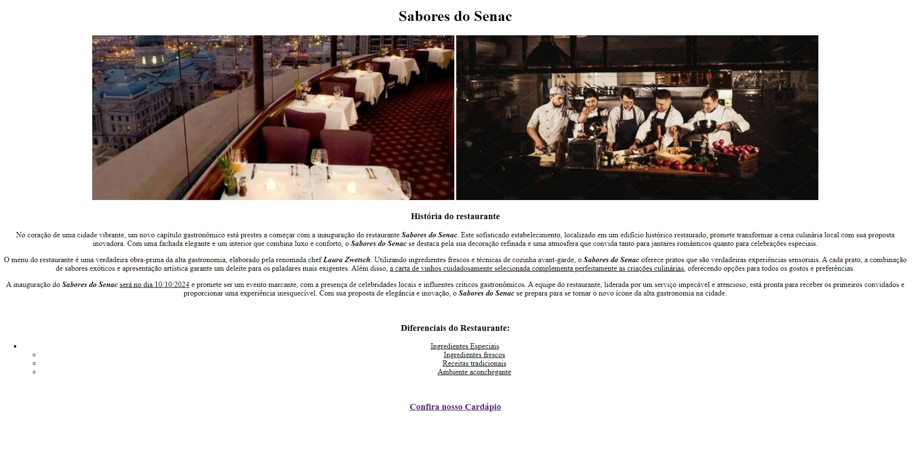
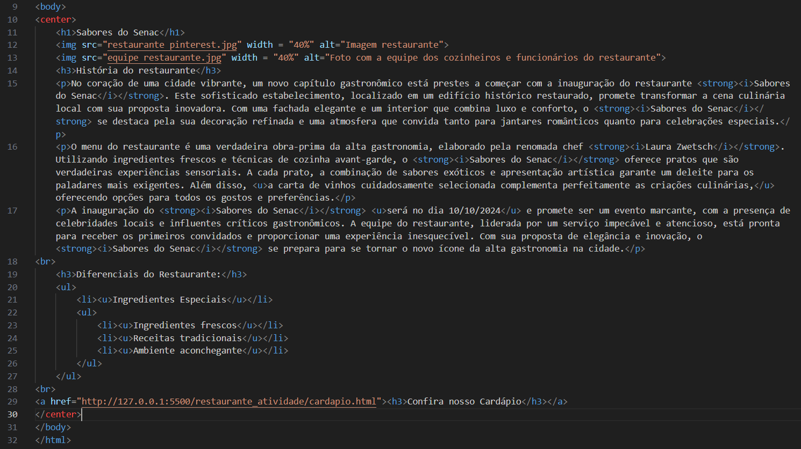

Projeto - Restaurante Sabores do Senac
Esse projeto que desenvolvi é um restaurante fictício chamado "Sabores do Senac". Possui uma página inicial que contém duas fotos fictícias para caracterizar o visual do espaço. Também possui uma lista com seus diferenciais, um texto que descreve o restaurante e sua história. Possui acesso a uma página com o seu cardápio, onde são descritos todos os pratos do restaurante, fotos e preços.
Linguagens utilizadas:
- HTML

